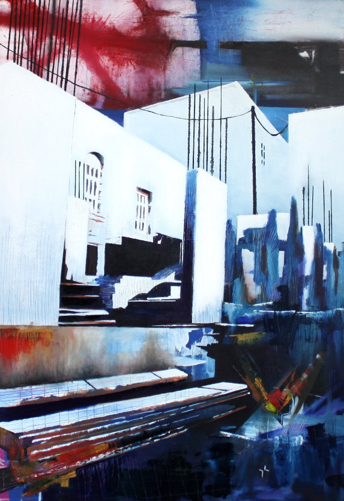

Construction site in Syros, 70x100cm Oil on Canvas
Mon Jan 03 18:36:09 UTC 2011

An (experimental) painting of a construction site somewhere in Ermoupoli, Syros (Greece).
Created over many stages, initially intended to be another painting all-together: